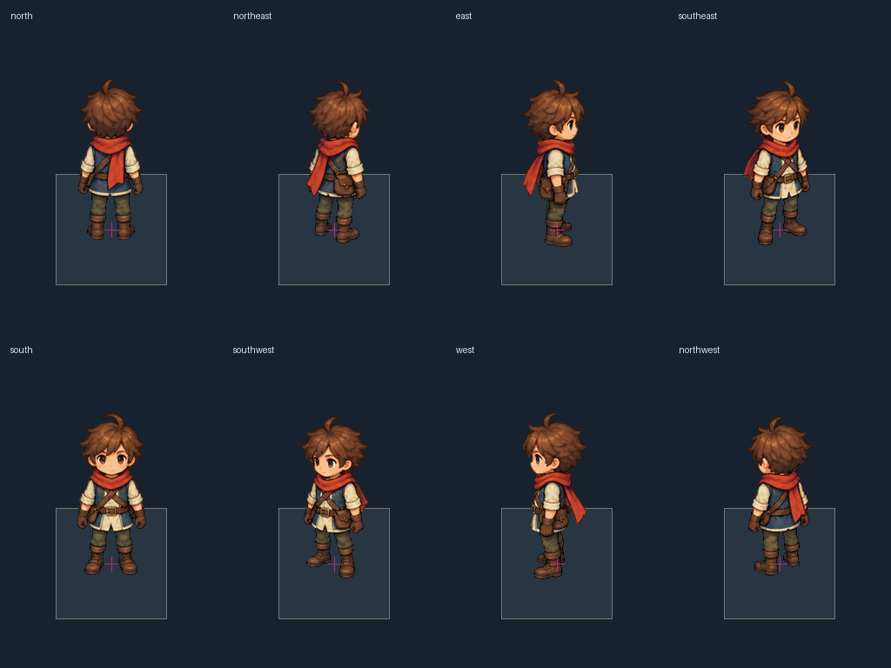
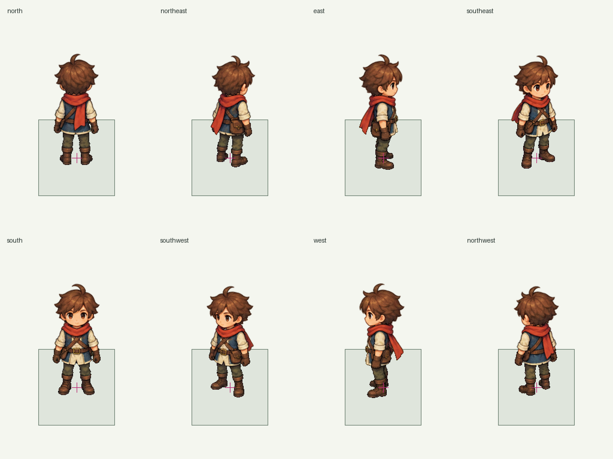
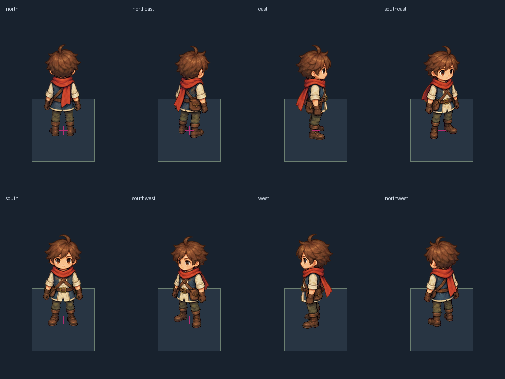
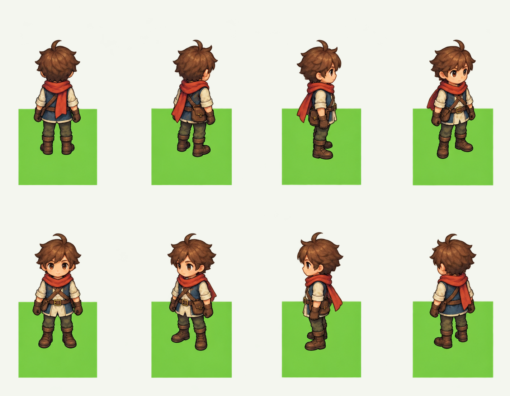
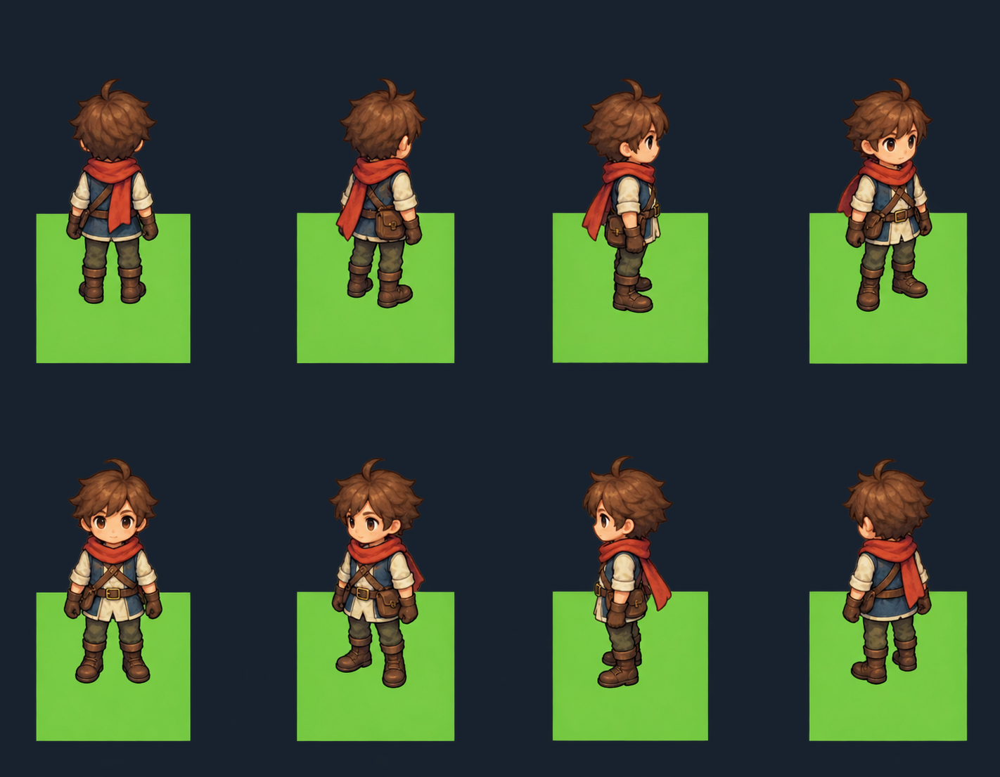

Row-major: north, northeast, east, southeast, south, southwest, west, northwest. Placement uses local ground anchor (96,248) with a 128px cell. Magenta crosses show the fixed world root. These previews are evidence for independent review.
Unchanged source · Raster guide · Manifest




